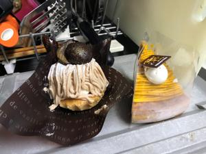

うるがいの話 ある日
最新: 保険支援を受けるうるがいとは 前提知識です
カニの画像をクリックすると『うるがいの話』サイトを表示します|
|
【うるがいの話】 うるがい(ｳﾙｶﾞｲ urugai)とは、『もずくがに』の名前でとても大きくなります。 |
|---|---|
|
|
【Got cat カミマヤーの話】 たながー（ﾀﾅｶﾞｰtanagaa）とは手長えびのことで、何種類かあり大きいのは車 エビぐらいになります。 |

|
【ぶながぁの話】 ぶながー(bunagaa)とは、赤い髪の毛、赤い身体、そして身長は１ｍ２０ｃｍ ぐらい、川の蟹を食べているの目撃された。場所は沖縄県国頭郡大宜味村のと ある村僕の隣近所に住んでいる爺さんから、聞いた話です。 |
|
|
【ギーマの話】 ギーマ(giima)とは、山原の里山に咲くスズランに似た、 花を付けます。実は食べられます、 気が付くと口の周りが紫になっています。 |
2021年10月15日 (金）保険支援を受ける
19:46

前期高齢者、おお、らしい。健康保険組合から、保険支援を受けるようにと案
内があり、何ものか良く分からないが専門相談員と、金城ダムの駐車所で待ち
合わせをした。自宅の訪問はヨメが嫌がるので、マクドナルドではどうですか
（喫茶店をよく使うらしい）と言われたが、相談員の事務所はどうですかと尋
ねると事務所は無いです、あそう。待ち合わせの時間の１０分程まえに着くと
すでにいた。見るからに相談員、名札をつけていた。年は、私より老けて見え
たが、同じ年のようだ。駐車所の近くにちょうどいい木陰があり、石の椅子に
腰かけ、渡された 「元気スコアチェック」 をもとに、指導を受ける。ん！こ
れって健康指導ジャン、事前の電話では違うといったような気がするが（健康
指導はあまり受けたくなかった）、仕方ないので指導を受ける。問題点は甘い
お菓子や飲料水を週に３回以上取るとダメ！らしい、これってあまりにもベキ
論で、この手の推奨論には腹が立つのである・・・・。毎夜、テレビを見なが
らモグモグしているのを辞めろ！といっている。と相談員訴える、ただ、相談
員の立場もあるので、途中から改善提案を受ける姿勢に徹する。では、３カ月
後に改善されたか、もう一度面談しますネ。（え！、多分もう受けないと思い
ます）、ついでにパンフレットの知識はイヤというほど知っています、ただ食
生活や運動以外に、気功と瞑想とレイキとかいわゆるスピリチュアル系のもの
も効果あると思いますよと、話しても無駄と思いながらも相談員を諭す。やが
て解散に、私は駐車所の隣のケーキ屋さんでヨメから頼まれたケーキを買いま
すね、では。相談員は微笑み返しをした。サヨナラ